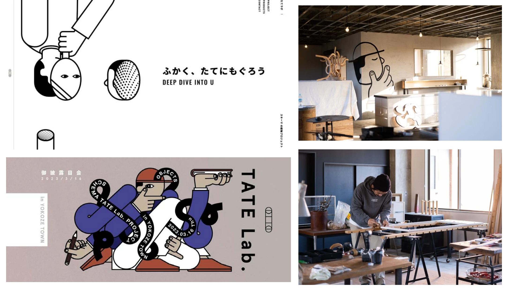

文化 / 健康・スポーツ / サウナ / 埼玉
TATE lab


PROJECT INFORMATION
公式サイトを見る ↗（新しいタブで開く）埼玉県横瀬町の自社プロジェクト「TATE Lab.」。五感拡張型クリエイティブ制作室として活動しています。
01 / 背景とテーマ
輪郭を与える
横瀬町を拠点にした、自社の五感拡張型クリエイティブ制作室です。土に触れたり木の温もりを感じたり、マテリアルの質感を意識することで、いままで気づかなかった自分の心の声を知る。そういう場として2023年3月に開きました。
02 / SCHEMAの担当範囲
全体を整える
SCHEMAは企画と全体設計を担当し、木工の作り手とともに商品を開発。埼玉県産の地域材合板を使い、受注生産で製作しています。ワークショップ型のクリエイティブセラピーから、ブース出展、販促までを自分たちで回す体制です。
03 / 取り組みの視点
枠組みをひらく
「あたまのいす」や、音と形の結びつき（Bouba/Kiki効果）から生まれた「BBKK木馬椅子」など、触れて座って初めてわかる形を探しています。埼玉県新商品AWARD大賞、OMOTENASHI Selectionなどの評価も受けました。掲げているのは「ふかく、たてにもぐろう」です。
AWARDS
受賞
- 2025
- 埼玉県新商品AWARD 2025 工芸・雑貨カテゴリー 大賞「BBKK木馬」 記事 ↗（新しいタブで開く）
- 2025
- OMOTENASHI Selection 受賞「あたまのいす」 記事 ↗（新しいタブで開く）
CREDITS
クレジット
- 設計／企画＋デザイン／ブース／販促／商品開発
- SCHEMA
- スタジオディレクター・家具職人
- 加藤健太